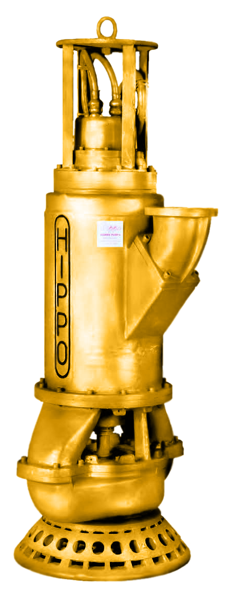
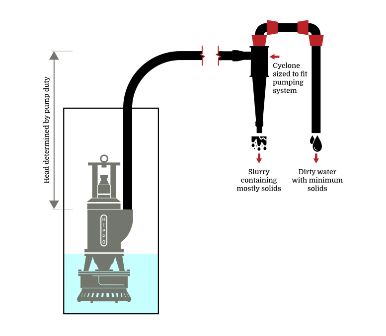
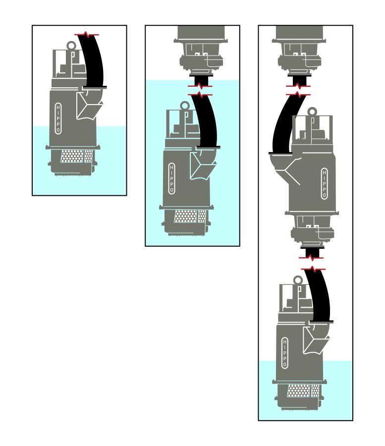
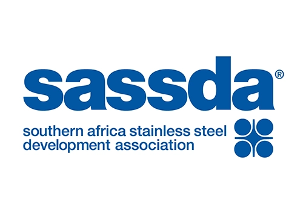
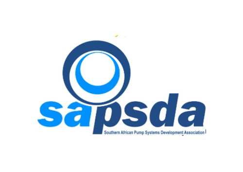

Custom Technology · Incomparable QualityТехнологии под заказ · Непревзойдённое качество
Hazleton Pumps develops and manufactures heavy-duty pumps and pump systems, custom built and designed for our clients' specific needs and requirements. Proudly made in South Africa and deployed worldwide.
Hazleton Pumps разрабатывает и производит тяжёлые насосы и насосные системы, создаваемые по индивидуальному проекту под конкретные задачи заказчика. С гордостью производится в Южной Африке и поставляется по всему миру.

Hazleton Pumps can provide spare parts and services to all Hazleton Pumps products and systems. This includes pumps originally manufactured in North America and Canada.
Hazleton Pumps поставляет запасные части и выполняет сервисное обслуживание для всей продукции и систем Hazleton Pumps, включая насосы, изначально изготовленные в Северной Америке и Канаде.
Why HazletonПочему Hazleton
Hazleton Pump systems are custom built and designed with pumps from the Hippo Slurry Pump Range, for each of our clients' specific needs.
Насосные системы Hazleton собираются и проектируются с использованием насосов линейки Hippo под конкретные требования каждого клиента.
Materials can be adjusted according to the type of application, from standard alloys to flameproof stainless steel.
Материалы подбираются под тип применения — от стандартных сплавов до взрывозащищённой нержавеющей стали.
Motors can be selected depending on the voltage and pole speeds required for the application.
Электродвигатели подбираются в зависимости от требуемого напряжения и частоты вращения.
What we buildЧто мы производим

Ideal for applications where fluids with solids need to be separated from the liquid. Different materials are used depending on whether the fluid contains hardened solids or abrasive liquids.
Идеально подходит для задач, где твёрдые частицы необходимо отделить от жидкости. Материалы подбираются в зависимости от того, содержит ли среда затвердевшие частицы или абразивные жидкости.

For very deep pumping applications, able to pump heads of 250m per stage, through multiple stages. The system can be configured to the application depth, going as deep as required.
Для задач с большой глубиной откачки: напор до 250 м на ступень, возможно несколько ступеней. Система конфигурируется под глубину объекта — настолько глубоко, насколько требуется.
Flagship productФлагманский продукт
Your ally in pumping corrosive and acidic slurries. The award-winning Hippo Slurry Pump Range is the workhorse for the continuous, harsh demands of mining and mineral processing. Custom built, it provides pumping solutions that are robust, rugged, reliable and flexible — from high-volume dewatering to settled-out acidic and corrosive slurries. The range can be built to explosion-proof standard IEC 60079-1:2005 and is available in various formats and applications.
Ваш надёжный партнёр в перекачке коррозионных и кислотных шламов. Удостоенная наград линейка шламовых насосов Hippo — это рабочая лошадка для непрерывных и тяжёлых условий горнодобывающей и перерабатывающей промышленности. Насосы изготавливаются по индивидуальному проекту и обеспечивают надёжные, прочные и гибкие решения — от высокообъёмного водоотлива до осевших кислотных и коррозионных шламов. Линейка может изготавливаться во взрывозащищённом исполнении по стандарту IEC 60079-1:2005 и доступна в различных конфигурациях.

All-metal heavy-duty submersible slurry pumps, capable of pumping abrasive and corrosive liquids with capacities up to 1500 l/s and heads up to 200 m.
Цельнометаллические погружные шламовые насосы повышенной прочности для перекачки абразивных и коррозионных жидкостей, производительность до 1500 л/с, напор до 200 м.

The world's most versatile vertical spindle pump range — Bottom Suction, Bottom Discharge, Top Suction and Vortex configurations, heads up to 110 m and flow up to 1500 l/s.
Самая универсальная в мире линейка вертикальных шпиндельных насосов — конфигурации с нижним всасыванием, нижним нагнетанием, верхним всасыванием и вихревая — напор до 110 м, расход до 1500 л/с.
Made in South Africa, relied on worldwideПроизводится в ЮАР, применяется по всему миру
The Hippo Slurry Pump Range was designed and developed to meet the harsh, continuous conditions of the mining and mineral-processing industries of Southern Africa. Capable of running dry and operating across a wide range of temperatures, the Hippo Pump Range is the ideal solution from high-volume dewatering to harsh, abrasive applications — with a custom-built solution for every application. Our pumps and pump systems have proven equally effective in Canada, South America, Australia, the Middle East and Russia.
Линейка шламовых насосов Hippo была разработана для суровых и непрерывных условий горнодобывающей и перерабатывающей промышленности Южной Африки. Способные работать «на сухом ходу» и в широком диапазоне температур, насосы Hippo — идеальное решение как для высокообъёмного водоотлива, так и для тяжёлых абразивных задач, с индивидуальным решением под каждое применение. Наши насосы и насосные системы доказали свою эффективность и за пределами региона — в Канаде, Южной Америке, Австралии, на Ближнем Востоке и в России.
IndustriesОтрасли
All sectors of mining and mineral extraction: coal, platinum, gold, iron and ore.
Все сегменты горной добычи и переработки полезных ископаемых: уголь, платина, золото, железо и руда.
Aggressive and abrasive solids.
Агрессивные и абразивные твёрдые частицы.
Including oil sands, bitumen, petrochemical, fertiliser and explosive industries.
Включая нефтяные пески, битум, нефтехимию, удобрения и взрывоопасные производства.
Specifically designed for high temperatures and contamination.
Специальные решения для высоких температур и загрязнённых сред.
Cooling, water returns and concentrated abrasive solids.
Охлаждение, оборотная вода и концентрированные абразивные твёрдые частицы.
Ash, water treatment and waste disposal.
Зола, водоочистка и утилизация отходов.
Where high concentrations of abrasive solids are present.
Там, где присутствуют высокие концентрации абразивных частиц.
Proudly associatedПартнёрские ассоциации


Our pump solutions can be custom made to your pumping requirements. Don't see a solution to your current pumping problem?
Наши насосные решения изготавливаются индивидуально под задачи заказчика. Не нашли готовое решение для своей задачи?